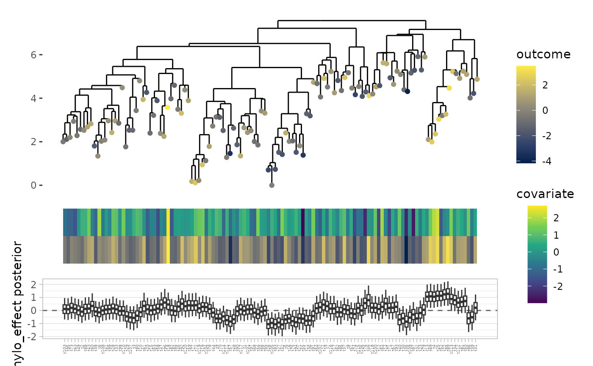
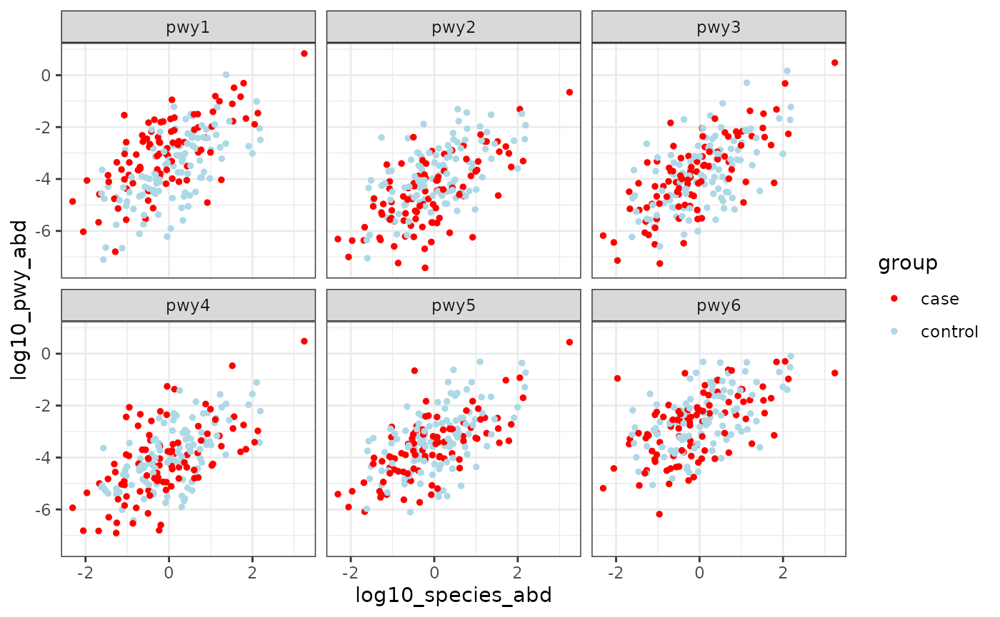
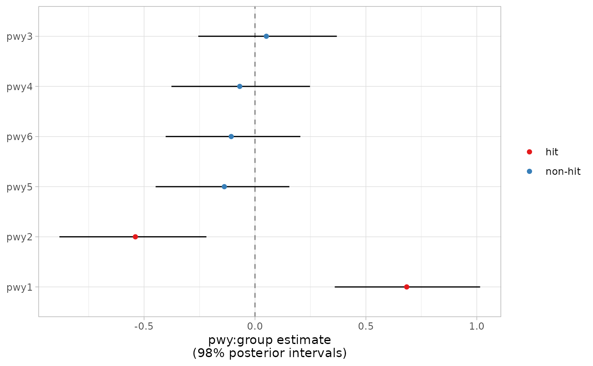

anpan tutorial
Introduction
It’s difficult to find associations between microbial strains and host health outcomes due to their fine resolution and non-recurrence across individuals. This package, anpan, aims to make inferring those relationships a bit easier by providing an interface to our strain analysis functionality. This functionality covers three main points:
- Modeling the association between outcome variables and microbial gene presence while accounting for covariates
- Including adaptive sample filtering of per-bug microbial gene profiles to identify and discard samples in which the bug is poorly covered
- Modeling the association between outcome variables and the phylogeny of strains within a given microbial species
- Modeling the difference in microbial pathways between experimental groups while controlling for species abundance.
We’ll cover each of these points in a top-level section. There is also an Advanced topics section with some additional information on a handful of more complicated diagnostics/methods/techniques.
Libraries
If you need installation instructions, please see the readme on Github.
We’ll start by loading the library in this code chunk:
library(anpan)
#> • This is anpan version 0.3.0
#> • Read the guide: Reinstall with `build_vignettes = TRUE`, then run
#> anpan::anpan_vignette()
#> • Get help: Visit the biobakery help forum at <https://forum.biobakery.org/>
#> • Parallelize: Run `future::plan()` as appropriate for your system.
#> • Activate progress bars: `library(progressr); handlers(global=TRUE)`The startup message points out that you can easily parallelize / show progress bars for most long-running computations in anpan by setting plan() and handlers() after loading the furrr and progressr packages. For most users plan(multisession, workers = 4) and handlers(global = TRUE) are probably close to what you want, though both the parallelization strategy and progress reporting are highly customizable.
A couple points to know about anpan function names:
- All of the modeling functions in anpan are prefixed with
anpan_, so if you type that into the RStudio console the auto-complete prompt should show a list of all the modeling functions. This can help you find the function you need quickly without having to dig through the documentation. - Plotting functions are prefixed with
plot_. - Several modeling functions have a
_batch()version, which applies a given model to each bug present in a user-specified input directory.
This code chunk loads some other packages we’ll use and rounds numbers when they’re printed:
library(data.table)
library(ggplot2)
library(tibble)
library(dplyr)
library(ape)
options(digits = 2)Gene model
The gene model uses microbial functional profiles and sample metadata to identify which genes in which bugs best explain sample outcome variables, while accounting for additional covariates like age and gender. The functional profiles are typically generated by HUMAnN. Rows are genes, samples are columns.
There are two key problems here:
- Not all bugs have their genes detectable in all samples
- When there are enough samples that have a given bug’s genes in them, finding the genes that associate with the outcome is a needle-in-a-haystack situation.
The gene model (implemented in the function anpan()) handles these issues respectively by:
- applying adaptive sample filtering to classify samples as having the bug’s genes “well covered” or “poorly covered”, so that the modeling can be run only using samples where there is data that can speak to the inferential goal
- applying logistic regression models that use either FDR correction or a horseshoe prior to pick out the small number of “hit” genes that associate with the outcome
In this section, you’ll get some example data (either by reading the data included with the package or by simulating it yourself), run both steps with a single call to anpan() (or anpan_batch()), examine the filtering diagnostics, then examine the model results.
Get example data
In this section we’ll obtain a small simulated dataset for a single bug that comes prepackaged with anpan. The simulated data doesn’t look realistically noisy (see the plots in the README / manuscript for that), but it incorporates the generative features anpan aims to pick up on. The Simulate example data sub-section further down shows exactly how this data was simulated if you would like to improve your understanding of the relationships in the data. You can get the paths to the data included with the package with these two commands:
meta_path = system.file("extdata", "fake_metadata.tsv",
package = "anpan", mustWork = TRUE)
bug_path = system.file("extdata", "g__Madeuppy.s__Madeuppy_Fakerii.genefamilies.tsv.gz",
package = "anpan", mustWork = TRUE)Let’s take a peek at the top of the metadata and the top-left corner of the gene profile data to see what they look like:
fread(meta_path, nrows = 5)
#> sample_id is_case has_bug bug_labd
#> <char> <lgcl> <lgcl> <num>
#> 1: sample_001 FALSE TRUE -1.9
#> 2: sample_002 FALSE FALSE -5.9
#> 3: sample_003 FALSE TRUE -3.5
#> 4: sample_004 FALSE FALSE -4.5
#> 5: sample_005 FALSE FALSE -4.7Notably, the metadata needs to have a column called “sample_id” that matches the column names of the gene file and any outcome / covariate information we might use. Later we will be using only is_case as the outcome and no additional covariates, but you might as want to include age, gender, etc. in which case they need to be present in this file.
Now let’s look at the gene data:
fread(bug_path, nrows = 5, select = 1:4)
#> # Gene Family sample_001 sample_002
#> <char> <num> <num>
#> 1: UniRef90_ABC000001|g__Madeuppy.s__Madeuppy_Fakerii 0.113 0.0000
#> 2: UniRef90_ABC000002|g__Madeuppy.s__Madeuppy_Fakerii 0.029 0.0063
#> 3: UniRef90_ABC000003|g__Madeuppy.s__Madeuppy_Fakerii 0.017 0.0000
#> 4: UniRef90_ABC000004|g__Madeuppy.s__Madeuppy_Fakerii 0.262 0.0000
#> 5: UniRef90_ABC000005|g__Madeuppy.s__Madeuppy_Fakerii 0.026 0.0000
#> sample_003
#> <num>
#> 1: 0.0000
#> 2: 0.0039
#> 3: 0.0137
#> 4: 0.0682
#> 5: 0.0118The gene file needs to have gene IDs in the first column, formatted as gene_id|taxon_id e.g. UniRef90_ABC000001|g__Madeuppy.s__Madeuppy_Fakerii. The names of the remaining columns need to exactly match the entries in the sample_id column of the metadata. By default anpan will trim "_Abundance-RPKs" from the column names of the gene file since that part of the ID is usually added by HUMAnN and not present in the metadata.
Run the gene model
Now that we have the path to the gene data set in bug_path and the path to the metadata set in meta_path, we can run the filtering and modeling with anpan(). If you have multiple bug files in a single directory, use anpan_batch() instead and set the bug_dir argument instead of bug_file.
The code block below shows the anpan() function call. The outcome argument is set to is_case the logical indicator of case status (which means that anpan() will be running a logistic regression model). Note that this means anpan will be running logistic regression models for each gene. In this case, we have no covariates to include, so we set that argument to NULL. The output directory is set to a sub-directory of the tempdir() we’ve been using so far, but it could be somewhere more permanent if you like.
anpan_res = anpan(bug_file = bug_path,
meta_file = meta_path,
out_dir = file.path(tempdir(), "anpan_output"),
covariates = NULL,
outcome = "is_case",
model_type = "fastglm",
discretize_inputs = TRUE)
#>
#> (1/3) Preparing the mise en place (checking inputs)...
#> * Creating output directory.
#> * Creating the filter stats directory in the output directory.
#> * Creating output plots directory.
#> (2/3) Reading and filtering /tmp/RtmpdwEm5c/temp_libpath456365ebd327/anpan/extdata/g__Madeuppy.s__Madeuppy_Fakerii.genefamilies.tsv.gz
#> * Reading /tmp/RtmpdwEm5c/temp_libpath456365ebd327/anpan/extdata/g__Madeuppy.s__Madeuppy_Fakerii.genefamilies.tsv.gz
#> * Initial prevalence filter dropped 0 genes out of 500 present in the input file.
#> * Computing sample statistics...
#> * 49 samples out of 200 had poor coverage of the genes of Madeuppy_Fakerii
#> * Samples with Madeuppy_Fakerii poorly covered have been discarded.
#> * Saving filtered data in wide format.
#> (3/3) Fitting models to filtered dataYou can see from the first set of messages that it seems to have identified most of the ~50 samples that didn’t have the bug present in the simulation.
A lot of stuff gets written out to out_dir, but let’s look at the result that we get in R:
head(anpan_res[order(p.value)])
#> gene estimate std.error statistic p.value q_bug_wise
#> <char> <num> <num> <num> <num> <num>
#> 1: UniRef90_ABC000001 -1.81 0.38 -4.8 1.5e-06 0.00077
#> 2: UniRef90_ABC000005 -1.59 0.35 -4.5 6.2e-06 0.00155
#> 3: UniRef90_ABC000482 -1.11 0.40 -2.8 5.8e-03 0.72326
#> 4: UniRef90_ABC000004 -1.04 0.38 -2.8 5.8e-03 0.72326
#> 5: UniRef90_ABC000015 -1.06 0.40 -2.6 8.9e-03 0.86169
#> 6: UniRef90_ABC000224 0.96 0.38 2.5 1.2e-02 0.86169
#> bug_name
#> <char>
#> 1: Madeuppy_Fakerii
#> 2: Madeuppy_Fakerii
#> 3: Madeuppy_Fakerii
#> 4: Madeuppy_Fakerii
#> 5: Madeuppy_Fakerii
#> 6: Madeuppy_Fakeriianpan() returns a data.table with regression statistics for the effect of each gene on the outcome. We can see that the two top-ranked hits (and the only two that pass a reasonable q-value threshold) are the strongest genes from the list of true effects. We don’t get the second through fourth genes with (weaker) true effects, meaning we likely didn’t have enough power in this simulation to detect those. The regression statistics for all terms in the model (including non-gene covariate terms) are written to the output directory in *all_terms.tsv.gz. The stats for just the gene terms (i.e. the same data frame returned by anpan() in R) is written to *gene_terms.tsv.gz. For anpan_batch() those will both be in the model_stats/ output directory, with a file called all_bug_gene_terms.tsv.gz in the top level of the output directory.
Examine filtering diagnostics
Before interpreting the model results, it’s important to ensure that the filtering step didn’t go awry. anpan() calls the function read_and_filter() internally, which applies:
- an initial prevalence filter to genes (must be >5 & <(N-5) positives per group for the gene)
- a sample filter to remove samples where the species in question is poorly covered
- and then a final prevalence filter to remove any marginal genes that became almost constant during the sample filter
The outputs of the filtering step goes into the filter_stats/ directory inside the specified out_dir. The final filtered data (which is the input to the modeling step) is in filter_stats/filtered_*.tsv.gz where * represents the bug name. The filter_stats/labels/ directory contains the calls of which samples contained the bug. The filter_stats/plots/ directory contains diagnostic plots from the filtering step. For a given bug, there are two plots to inspect: the gene profile lines plot and the k-means filtering dot plot. We’ll look at the dot plot first:

Recall the original input file: genes are rows and columns are samples. Here, each dot represents a sample, meaning a column in the original input. The x axis is the number of non-zero entries in that column, and the y axis is the median log abundance of the non-zero entries. Meaning if a sample has many non-zero entries and high median log abundance, the bug in question is probably well-covered in the sample. A simple k-means clustering is applied to the dots on this scatterplot, which is used to define the presence/absence calls (i.e. provide the coloring of the dots). In this particular example, only two samples are misclassified. If the dot plot doesn’t show two well separated populations, it might make sense to do some initial manual curation of the data as appropriate and then set filtering_method = "none" when calling anpan() to turn off the kmeans filtering.
Next we’ll look at the gene profile lines plot:

This shows a monotonic decreasing line for each sample. The x-axis is the rank of genes in that sample, while the y-axis is the log-abundance value of the ith-ranked gene in that sample. Ideally there should be good separation between red and blue lines. In this simulated data they seem to decrease linearly, but in more realistic data it usually looks more like a plateau. If a particular sample contains a mixture of strains, there may even be multiple plateau steps as the profile decreases, representing different groups of genes dropping out between strains.
If the two groups of samples identified by the filtering step aren’t clearly separated, that’s cause for concern. That means you’re potentially throwing out or including samples you shouldn’t. If the automated filtering doesn’t work out, you can filter your samples manually on your own then turn off the automated filtering with filtering_method = "none".
Examine gene model results
We can visualize the results with plot_results() as in the code block below. This function is called automatically on each bug when using anpan_batch(). We first read in the model inputs from the filter_stats directory, then pass that and the model results to plot_results():
input_path = file.path(tempdir(),
"anpan_output", "filter_stats",
"filtered_Madeuppy_Fakerii.tsv.gz")
model_input = fread(input_path)
plot_results(res = anpan_res,
model_input = model_input,
covariates = NULL,
outcome = "is_case",
bug_name = "Madeuppy_Fakerii",
cluster = "both",
show_trees = TRUE,
n_top = 20,
q_threshold = NULL,
beta_threshold = NULL)
#> Warning: `aes_string()` was deprecated in ggplot2 3.0.0.
#> ℹ Please use tidy evaluation idioms with `aes()`.
#> ℹ See also `vignette("ggplot2-in-packages")` for more information.
#> ℹ The deprecated feature was likely used in the anpan package.
#> Please report the issue to the authors.
#> This warning is displayed once every 8 hours.
#> Call `lifecycle::last_lifecycle_warnings()` to see where this warning was
#> generated.
#> Warning: The `size` argument of `element_rect()` is deprecated as of ggplot2 3.4.0.
#> ℹ Please use the `linewidth` argument instead.
#> ℹ The deprecated feature was likely used in the anpan package.
#> Please report the issue to the authors.
#> This warning is displayed once every 8 hours.
#> Call `lifecycle::last_lifecycle_warnings()` to see where this warning was
#> generated.
Things to know about the results plot:
- The central blue/green tile plot shows the model inputs i.e. which genes (rows) are present in which samples (columns).
- The annotation bar at the top shows the outcome variable
- The color bars at the top can also show up to three additional covariates.
- the estimate intervals on the left show the coefficient estimates +/- 1.96 * standard error bars and nominal significance stars
- In this case, you can see that really only the top two rows are obviously different between the two groups, despite the nominal significance stars on the lower rows.
- The genes are sorted by significance by default, but they and/or the samples may be clustered by setting
cluster = "samples"or"genes"or"both".- In this case, because we didn’t simulate any linkage of genes or relatedness of samples, we don’t get any interesting clustering structure.
- The plot shows the top 50 genes by default, but you can set the
n_top,beta_threshold, and/orq_thresholdarguments to override this behavior.
Some additional outputs you’ll get with anpan_batch():
- with
model_type = "fastglm"you’ll get a global p-value histogram as a diagnostic for the performance of the regressions. You can learn how to interpret p-value histograms here. Basically, you should expect/hope to get a mostly uniform distribution with a spike on the left. - a
warnings.txtfile listing any warnings that occurred - a
anpan_batch_call.txtlisting the command that was issued toanpan_batch()
Additional details
Additional details on the gene model.
Simulate example data
This section simulates some data for 200 samples in a synthetic bug with 500 genes. The simulation doesn’t look realistically noisy (see the plots in the README / manuscript for that), but it incorporates the generative features anpan aims to pick up on.
First we set some of the simulation parameters and a random seed:
n_per_group = 100
n_gene = 500
out_dir = tempdir()
set.seed(123)Then we generate the simulated metadata. The has_bug column is an indicator if a given sample has the bug at all. Roughly a quarter of our samples don’t. Of course you won’t have this indicator in real data – this is what the adaptive filtering step tries to figure out.
sim_meta = data.table(sample_id = paste0('sample_', 1:(2 * n_per_group)),
is_case = rep(c(FALSE, TRUE),
each = n_per_group),
has_bug = sample(x = c(TRUE, FALSE),
prob = c(.75, .25),
size = 2 * n_per_group,
replace = TRUE))
meta_path = file.path(out_dir, "fake_metadata.tsv")
fwrite(sim_meta,
file = meta_path,
sep = "\t")We simulate the gene-level data in the blocks below. A couple notes on what’s going on here:
- we set the first five genes to have a non-zero true effect
- the bug and gene abundances are modeled on the log scale
- the log abundances (
labd) come from a left-skewed normal distribution, which we define in the functionrskewnormal(adapted from thesnpackage) - gene log-abundances below the 33rd percentile are truncated to -Inf i.e. are zeroed out.
First we create the simulated metadata:
true_effects = data.table(gene = paste0("UniRef90_ABC", 1:(n_gene)),
effect = c(rnorm(5, sd = 2),
rep(0, (n_gene - 5))))
sim_grid = expand.grid(gene = paste0("UniRef90_ABC", 1:(n_gene)),
sample_id = paste0( "sample_", 1:(2*n_per_group))) |>
as.data.table()Then we simulate the log-abundances. A couple notes on how this is done:
- If a sample doesn’t have a bug present, it drops the bug abundance.
- Gene log-abundance is proportional to bug abundance and in cases, the true effect of the gene (which really flips the causal direction implied by the gene model, but for a simulation this simple it doesn’t matter).
- most of the coefficients used here are magic numbers chosen to get the values roughly near realistic ranges
rskewnormal = function(n, location = 0, scale = 1, skew = 0) {
# adapted from sn::rsn()
delta = skew / sqrt(1 + skew^2)
chi = abs(rnorm(n))
nrv = rnorm(n)
z = delta * chi + sqrt(1 - delta^2) * nrv
return(location + scale * z)
}
sim_meta[, bug_labd := rskewnormal(n = nrow(sim_meta),
location = -2,
skew = -3) +
-2.5 * (!has_bug)]
sim_df = sim_grid[sim_meta, on = 'sample_id'][true_effects, on = 'gene']
sim_df[, gene_labd := rskewnormal(n = nrow(sim_df),
location = -1 + 0.5 * bug_labd + is_case * effect,
skew = -3,
scale = 3)]
sim_df$gene_labd[sim_df$gene_labd < quantile(sim_df$gene_labd,
probs = .333)] = -InfThe block below performs a bit of formatting to make the simulated data look like real HUMAnN data. It:
- exponentiates the log-abundances
- pivots to wide format
- adds on the fake species identifier to the gene column
- and renames to the gene column to
# Gene Family
sim_df[, gene_abd := exp(gene_labd)]
sim_wide = dcast(sim_df[, .(gene, sample_id, gene_abd)],
gene ~ sample_id,
value.var = "gene_abd")
sim_wide[, gene := paste0(gene, "|g__Madeuppy.s__Madeuppy_Fakerii")]
names(sim_wide)[1] = "# Gene Family"Then we write out the simulated data. The name of the file isn’t important, but here we’ve chosen to follow the naming conventions of HUMAnN.
bug_path = file.path(out_dir, "g__Madeuppy.s__Madeuppy_Fakerii.genefamilies.tsv.gz")
fwrite(sim_wide,
file = bug_path,
sep = "\t")PGLMMs
Phylogenetic generalized linear mixed models (PGLMMs) are probabilistic models that account for phylogenetic structure. For a PGLMM with a linear regression as the base model, the model structure is as follows:
y = X \beta + (1|\text{leaf}) + \epsilon (1|\text{leaf}) \sim \text{MVNormal}(0, σ_p^2\Omega)\epsilon \sim \text{Normal}(0, σ_R^2)The outcome \(`y`\) is modeled as a function of some familiar terms: covariates \(`X`\), coefficients \(`\beta`\), and residual noise \(`\epsilon`\). The key addition is the phylogenetic term \(`(1|\text{leaf})`\), which contains a “random effect” for each observation in \(`y`\). Unlike typical random effects (which are usually independent between different levels of the random effect variable), the values in the phylogenetic term follow a pre-specified correlation structure \(`\Omega`\), which is derived from a tree. The variability of the phylogenetic term is scaled by the “phylogenetic noise” parameter \(`\sigma_{phylo}`\).
To understand how a tree implies a correlation structure, consider the plot below showing a phylogenetic tree and the lower triangle of the correlation matrix it implies. You can see that the clade on the left (with low inter-leaf distances between its members) forms a bright sub-block of high correlation in the matrix. The tiny clade on the far right has high inter-leaf distance between its members and the rest of the tree, so its members generally have low correlation with the rest of the leaves, exhibited by the dark band on the right of the triangle. Note that the matrix is derived solely from the structure of the tree (the black lines) – it is not influenced by the colored outcome dots. The correlation matrix numerically quantifies the “higher inter-leaf distance → lower correlation” principle.

We can see in the synthetic example above that the tree clearly does impact the outcome: the two well-separated clades clearly show very different outcome values. A PGLMM evaluated on this data would easily detect such a blazing signal, so in the remainder of this section we’ll simulate a tree with an outcome that’s realistically noisier and less visually obvious. After that we’ll fit the PGLMM with anpan_pglmm() then examine the results.
Simulate data
To demonstrate the PGLMM functionality, we’ll simulate a tree, a single covariate x, and an outcome variable y. We’ll use n = 120, sigma_phylo = 1 and sigma_resid = 1.
The best way to understand a generative model is to use it to simulate data. If you feel like you don’t understand PGLMMs, step through these simulation blocks line by line (10 lines in total), look at the outputs, and make sure you understand what happens on that line. Try modifying it in different ways and see how the outputs and downstream inference change.
The code chunk below sets a randomization seed and the parameters we’ll use, then generates a random tree:
set.seed(123)
n = 120
sigma_phylo = 1
sigma_resid = 1
tr = ape::rtree(n)You can try plot(tr) if you want to take a quick look at your tree, but we’ll examine it with some additional detail later.
The chunk below derives the correlation matrix implied by the tree:
cor_mat = ape::vcv.phylo(tr, corr = TRUE)
cor_mat[1:5,1:5]
#> t86 t39 t31 t112 t81
#> t86 1.00 0.77 0.56 0.29 0.30
#> t39 0.77 1.00 0.58 0.29 0.31
#> t31 0.56 0.58 1.00 0.33 0.35
#> t112 0.29 0.29 0.33 1.00 0.93
#> t81 0.30 0.31 0.35 0.93 1.00The “t#” labels are the default sample IDs that ape::rtree() puts as tip labels.
The chunk below generates a normally distributed covariate covariate (which has no connection to phylogeny), the linear effect of that covariate linear_term, the true phylogenetic effects we’ll use, and the outcome variable outcome, all stored in a tibble called metadata. Note that the effect size of the covariate is explicitly set to 1:
set.seed(42)
covariate = rnorm(n)
linear_term = 1 * covariate + rnorm(n, mean = 0, sd = sigma_resid)
true_phylo_effects = sigma_phylo * draw_mvnorm(Sigma = cor_mat)
metadata = tibble(sample_id = colnames(cor_mat),
covariate = covariate,
outcome = linear_term + true_phylo_effects)metadata
#> # A tibble: 120 × 3
#> sample_id covariate outcome
#> <chr> <dbl> <dbl>
#> 1 t86 1.37 -0.852
#> 2 t39 -0.565 -1.97
#> 3 t31 0.363 1.30
#> 4 t112 0.633 0.933
#> 5 t81 0.404 1.09
#> 6 t50 -0.106 1.23
#> 7 t113 1.51 2.42
#> 8 t34 -0.0947 -0.676
#> 9 t4 2.02 2.32
#> 10 t13 -0.0627 1.08
#> # ℹ 110 more rowsNow we have our tree and the metadata that goes along with it. A quick plot shows that the outcome correlates with the simulated covariate as desired:
ggplot(metadata, aes(covariate, outcome)) +
geom_point() +
labs(title = "The simulated covariate correlates with the outcome") +
theme_light()
We can use the function anpan::plot_outcome_tree() to visually inspect the tree and confirm that it also appears related to the outcome. The dot on each leaf is shaded according to the outcome:
plot_outcome_tree(tr,
metadata,
covariates = NULL,
outcome = "outcome")
You can sort of see by eye that the phylogeny correlates with the outcome. Some clades are generally brighter, and close neighbors usually have about the same shade of color.
How do we quantitatively assess the impact of the phylogeny on the outcome while also building in the relationship with the covariate? Use a PGLMM.
Exercise: Change the simulation to produce a binary outcome. Hint: If you don’t want to define an inverse logit function, you can use stats::plogis(). You may also want to use rbinom() and start by first simulating a standard logistic regression. The answer is given in the source Rmarkdown.
Fit the PGLMM
The code chunk below shows how to use anpan_pglmm() to fit a PGLMM that examines this data for phylogenetic patterns while adjusting for our covariate. It will take a couple minutes to run. By default anpan_pglmm regularizes the noise ratio sigma_phylo / sigma_resid with a Gamma(1,2) prior and runs a leave-one-out model comparison against a “base” model that doesn’t have the phylogenetic component. The default family = "gaussian" argument means the residual error is normally distributed. This can be changed to family = "binomial" with a binary outcome to run a phylogenetic logistic regression.
result = anpan_pglmm(meta_file = metadata,
tree_file = tr,
outcome = "outcome",
covariates = "covariate",
family = "gaussian",
bug_name = "sim_bug",
reg_noise = TRUE,
loo_comparison = TRUE,
run_diagnostics = FALSE,
refresh = 500,
show_plot_tree = FALSE,
show_post = FALSE)
Aside from fitting the model, this command prints a plot (and a lot of console output with messages about the progression of the MCMC sampler). This plots shows the correlation matrix implied by the tree. This is how the PGLMM sees the correlation structure of the leaves. (Side note: the randomized tree name shows up because we didn’t provide one explicitly and the function wasn’t able to pull one from the tree input either).
If you want to tl;dr the rest of the PGLMMs section, look at the model comparison result to decide if the phylogeny is informative beyond the base model:
result$loo$comparison
#> elpd_diff se_diff
#> pglmm_fit 0.0 0.0
#> base_fit -11.8 4.0Leave one out model comparison is NOT a null hypothesis significance test.
The PGLMM is the best fitting model, the difference in ELPD (predictive performance score) is relatively large (> -4), and the difference in ELPD for the base model is more than two standard errors below zero. So in this case you can say the phylogeny clearly contributes to the outcome. Given that we simulated the tree with \(`\sigma_{phylo} > 0`\), that is the correct conclusion.
If you want to see how the fit sees the effect of the tree, you can examine the posterior distribution on the phylogenetic with a simple interval plot laid out below the tree using plot_tree_with_post() (or leave show_post at its default TRUE value in the above call to anpan_pglmm()):
p = plot_tree_with_post(tree_file = tr,
meta_file = metadata,
fit = result$pglmm_fit,
covariates = "covariate",
outcome = "outcome",
color_bars = TRUE,
labels = result$model_input$sample_id)
#> Make sure the label order matches the fit object! See ?plot_tree_with_post
p
You can see that the model fit confirms what we observed visually earlier: the phylogenetic effect generally shifts the outcome up in the bright clades and tightly correlated neighbors generally have very similar phylogenetic effects.
But how do we estimate clade effects? It’s important to contextualize the results in terms of the model formulation. A PGLMM doesn’t see the tree, it sees the correlation matrix \(`\Omega`\). Human eyes can easily pick out blocks in the matrix as discrete clades, but the model sees only a single, constrained multivariate distribution. So a presentation like this where the phylogenetic effects are juxtaposed against the tree is a straightforward way to display of the fitted model, but can’t draw the sharp dividing lines we might want.
If you are able to justifiably define a clade manually (with some articulable, non-circular reasoning beyond “this clade looks like it has a higher outcome”), you can use the function compute_clade_effects() to compare the average phylogenetic effect of clade members against that of non-members. However automating the selection of clades is non-trivial and beyond the scope of this package, so we won’t be demonstrating that function here.
Exercise: Fit a PGLMM with a binary outcome. If you weren’t able to modify the simulation to generate binary outcomes in the previous exercise, just set the outcome to random draws of TRUE/FALSE (in which case you should observe zero phylogenetic signal). The answer is given in the source Rmarkdown.
Detailed interpretation
PGLMMs have a lot of moving parts. Let’s look at some of the results more closely.
Messages
A couple points to mention on the messages produced by anpan_pglmm():
- There’s an important startup message that usually gets pushed off by later messages:
(1/3) Checking inputs.
Plotting correlation matrix...
Prior scale on covariate effects aren't specified. Setting to 1 standard deviation for each centered covariate. These values are:
linear_term prior_sd
<char> <num>
1: covariate 1.019
It would be better to set the beta_sd argument based on scientific background knowledge.This message is stating the empirical priors on the covariate coefficients which anpan inferred from the data. It’s usually better to set these yourself based on background information with the beta_sd argument.
- There are messages from Stan about missing init values:
Init values were only set for a subset of parameters.
Missing init values for the following parameters:
- chain 1: beta, centered_cov_intercept, std_phylo_effects
- chain 2: beta, centered_cov_intercept, std_phylo_effects
- chain 3: beta, centered_cov_intercept, std_phylo_effects
- chain 4: beta, centered_cov_intercept, std_phylo_effectsThese are benign – the randomized initialization that Stan provides works fine for these parameters.
- There’s a fairly innocuous message from Stan that usually occurs at the start of the MCMC chains:
Chain 1 Informational Message: The current Metropolis proposal is about to be rejected because of the following issue:
Chain 1 Exception: normal_id_glm_lpdf: Scale vector is inf, but must be positive finite! (in '/var/folders/g8/22sdpptx451fng3nbj7c45vw0000gq/T/RtmpSaBGri/model-2e4326e878c5.stan', line 37, column 2 to column 62)
Chain 1 If this warning occurs sporadically, such as for highly constrained variable types like covariance matrices, then the sampler is fine,
Chain 1 but if this warning occurs often then your model may be either severely ill-conditioned or misspecified.This means that the noise parameter during one of the warmup iterations escaped the weak prior and got set to a really large value and the model didn’t like it. As the message states, this isn’t a problem if it only occurs sporadically during the warmup iterations. You can check the Stan outputs or set refresh = 1 to confirm this, but I’ve personally never seen this message occur outside of warmup.
Elements of the result value
result is a list with five elements:
model_input- the input metadata that made it into the analysis after taking the samples that overlapped with the leaves of the tree, re-ordered to the order of samples given in the correlation matrix.cor_mat- the correlation matrix derived from the treepglmm_fit- a CmdStanMCMC object containing the PGLMM fitbase_fit- another CmdStanMCMC object containing the “base” GLM fit (without the phylogenetic component)loo- a list containing four elements:pglmm_loo- a loo() result for the PGLMM model using integrated importance weightspglmm_ll_mat- a matrix giving the integrated log-likelihood importance weights with for posterior iterations (rows) of each leaf (columns)base_loo- a loo() result for the base modelcomparison- a loo_compare() result comparing the two models by leave-one-out predictive performance.
The pglmm_fit part of the result is the model fit produced by cmdstanr for the PGLMM. Any method applicable to CmdStanMCMC objects works on this, but of particular interest is the summary() method which we’ll use to inspect model fit.
Check diagnostics
If you run anpan_pglmm(run_diagnostics = TRUE), the function will run the diagnostic checking functions for the MCMC and loo results as applicable. In the example above, the output will look something like this:
(4/4) Running diagnostics:
Processing csv files: /var/folders/g8/22sdpptx451fng3nbj7c45vw0000gq/T/RtmpZqhitZ/cont_pglmm_noise_reg-202211071429-1-59c385.csv, /var/folders/g8/22sdpptx451fng3nbj7c45vw0000gq/T/RtmpZqhitZ/cont_pglmm_noise_reg-202211071429-2-59c385.csv, /var/folders/g8/22sdpptx451fng3nbj7c45vw0000gq/T/RtmpZqhitZ/cont_pglmm_noise_reg-202211071429-3-59c385.csv, /var/folders/g8/22sdpptx451fng3nbj7c45vw0000gq/T/RtmpZqhitZ/cont_pglmm_noise_reg-202211071429-4-59c385.csv
Checking sampler transitions treedepth.
Treedepth satisfactory for all transitions.
Checking sampler transitions for divergences.
No divergent transitions found.
Checking E-BFMI - sampler transitions HMC potential energy.
E-BFMI satisfactory.
Effective sample size satisfactory.
Split R-hat values satisfactory all parameters.
Processing complete, no problems detected.
Pareto k diagnostic values:
Count Pct. Min. n_eff
(-Inf, 0.5] (good) 119 99.2% 720
(0.5, 0.7] (ok) 1 0.8% 1654
(0.7, 1] (bad) 0 0.0% <NA>
(1, Inf) (very bad) 0 0.0% <NA>
All Pareto k estimates are ok (k < 0.7).
Warning message:
Some Pareto k diagnostic values are slightly high. See help('pareto-k-diagnostic') for details.You can see that the MCMC diagnostics all came out well in this case. You’ll get a link to the Stan warnings guide if your sampler hits any issues. If you do get convergence issues, the two simplest things to try first are usually setting adapt_delta to a higher-than-default value (e.g. 0.95) and increasing the number of iterations with e.g. iter_warmup = 2000 and iter_sampling = 2000. Another common issue is that if you accidentally use family = "gaussian" where you meant family = "binomial", you’ll get E-BFMI warnings.
In the example above we got one ok (but not good) Pareto k value, which is more-or-less fine. Running more iterations with a higher adapt_delta can sometimes help improve this, but for anpan_pglmm() the occurrence of bad / very bad Pareto k values are usually more indicative of a dataset problem than a model problem. Low N, correlation matrices that are close to the identity, and/or imbalanced binary outcomes can make it impossible to estimate accurate loo results. The Cross-validation FAQ has more information. The parameter of interest in a PGLMM is really sigma_phylo anyway (see next section), so loo results aren’t absolutely necessary to assess the impact of the phylogeny on the outcome. If you aren’t interested in the model comparison, you can just set loo_comparison = FALSE and ignore the issue.
Inspect model fit
We’ll use the summary() method here to pull out the posterior means for several parameters (black) and compare them to their true values (red). These parameters include for the covariate effects beta, the intercept, residual noise term sigma_resid, the spread of phylogenetic effects sigma_phylo and the per-leaf phylogenetic effects (which are indexed in the same order as model_input):
post_summary = result$pglmm_fit$summary() |>
filter(grepl("beta|^intercept|sigma|^phylo_effect", variable)) |>
mutate(true_value = c(1,1,1, true_phylo_effects, 0))
post_summary[-c(4:113),] |>
ggplot(aes(mean, variable)) +
geom_point() +
geom_segment(aes(x = q5, xend = q95,
y = variable, yend = variable)) +
geom_point(aes(x = true_value),
color = 'firebrick1',
size = 3) +
labs(x = 'value',
y = 'parameter',
title = 'Posterior mean & 90% interval in black, true values in red') +
theme_light()
Most of the phylogenetic effects are cut from the plot for the sake of visibility. We can see that the posterior mean for beta[1] (the effect of the covariate) is fairly close to the true value (1), as are the intercept (0) and noise terms (1 and 1). Importantly, the 90% posterior intervals capture the true values.
Another thing to note on the above plot is the posterior interval of sigma_phylo. This parameter is the estimated marginal “spread” of leaf effects. It’s about 1, and clearly quite far from zero. This means that leaf effects are allowed to be quite large, depending on where a leaf is in the tree. If the sigma_phylo estimate is near zero, that means leaf effects are all small, meaning the tree structure doesn’t explain variation in the outcome well.
So we mostly recaptured our simulation parameters, but how well does the model really fit the data overall? We can use anpan::plot_tree_with_post_pred() to overlay the posterior predictive distribution for each leaf and show that the predictive distribution for each observation usually covers the true value:
anpan::plot_tree_with_post_pred(tree_file = tr,
meta_file = metadata,
covariates = "covariate",
outcome = "outcome",
fit = result$pglmm_fit,
labels = result$model_input$sample_id,
verbose = FALSE) So when observations (the colored dots) are held out, the posterior predictive distribution for each leaf (the boxplots) generally capture the true value, showing that our model generally fits the data well.
So when observations (the colored dots) are held out, the posterior predictive distribution for each leaf (the boxplots) generally capture the true value, showing that our model generally fits the data well.
What about the posterior on the linear model component? We can visualize that by taking some of the posterior draws (with cmdstanr::draws()) of the line (the parameters beta[1] and centered_cov_intercept) and overlay those onto the outcome ~ covariate scatterplot. The covariate is centered with scale(scale=FALSE) since that is how the Stan model uses the data:
line_draws = result$pglmm_fit$draws(format = 'data.frame') |>
as_tibble() |>
select(beta = `beta[1]`, intercept = centered_cov_intercept) |>
slice_sample(n = 40)
result$model_input |>
ggplot(aes(scale(covariate, scale = FALSE), outcome)) +
geom_point() +
geom_abline(data = line_draws,
aes(slope = beta,
intercept = intercept),
alpha = .2) +
theme_light()
There’s a bit more uncertainty in the slope and intercept than you might expect given how visually clear the relationship is. This is because the model has to assess this relationship in the context of the very flexible phylogenetic component. If \(`\sigma_{phylo}`\) is high and the phylogenetic component if explaining most of the residual variation here, the linear component is free to relax toward the prior distribution. Vice versa if the phylogenetic component explains the variation poorly.
loo interpretation
Let’s look at the pglmm_loo result:
result$loo$pglmm_loo
#>
#> Computed from 4000 by 120 log-likelihood matrix.
#>
#> Estimate SE
#> elpd_loo -182.1 7.2
#> p_loo 14.3 1.7
#> looic 364.3 14.3
#> ------
#> MCSE of elpd_loo is 0.1.
#> MCSE and ESS estimates assume MCMC draws (r_eff in [0.3, 1.6]).
#>
#> All Pareto k estimates are good (k < 0.7).
#> See help('pareto-k-diagnostic') for details.PGLMM models are very flexible because they have a parameter for every leaf. In some cases, this can cause the naive leave-one-out importance weights calculated from raw log-likelihood values to be unstable. anpan generates importance weights for each observation by integrating the conditional likelihood for each observation at each posterior iteration as described in section 3.6.1 of Vehtari et al. (2016). This produces stable importance weights that we can use for model comparison. Note that unstable importance weights can still occur if the posterior on phylogenetic effects are poorly constrained by the tree (i.e. the correlation matrix is close to the identity matrix) and/or data (i.e. n is low, typically <50 for continuous outcomes or <100 for binary outcomes, though these cutoffs depend heavily on the tree as well).
The loo() result provides some diagnostics that can help confirm that the importance weights are stable and we can trust the downstream model comparison. In this case, we get a small number of Pareto k diagnostic values that are only “okay”. If there are bad or “very bad” k values, that indicates that individual observations are having a strong effects on the model fit, and hence that the loo-based model comparison shouldn’t be trusted. That scenario can happen more frequently without regularization when reg_noise = FALSE.
We only got a small number of non-good Pareto k value here (and none that were bad), so in this case the model comparison should be fine.
Let’s look at the model comparison:
result$loo$comparison
#> elpd_diff se_diff
#> pglmm_fit 0.0 0.0
#> base_fit -11.8 4.0The loo package prints model comparison objects by placing the model with the best leave-one-out predictive performance on the first row, in this case the PGLMM fit. The difference in expected log pointwise predictive density (ELPD) compared to the other model is shown in the first column along with a standard error of the difference in the second column. Here the ELPD difference is about -11.8 with a SE around +/- 4, which is both large and clearly non-zero. So here we would conclude that the phylogenetic component of the PGLMM clearly fits better than the base linear model. Given that we simulated the outcome based on the tree with \(`\sigma_{phylo} \neq 0`\), that is the correct conclusion.
There’s a lot more to be said about loo model comparison that is beyond the scope of this vignette. You can read more interpretation of loo results on the Cross-validation FAQ written by the loo authors.
Pathway random effects model
The pathway model uses a random effects model applied to the pathways in a single bug. It looks for pathways that differ substantially in abundance between two groups while accounting for the correlation with species abundance. Using the standard lme4 formula syntax, the model is:
\textbf{log10(pwy_abd)} \sim \textbf{log10(species_abd) + (1|pwy) + (0 + group|pwy) + intercept}The relevant functions to fit the model are anpan_pwy_ranef() and anpan_pwy_ranef_batch().
A few notes on this model:
- Because we’re working with log abundances, zeros are discarded. (side note: we once tried a censored model that didn’t discard zeros but instead modeled them as unknown low values. It added a lot of complexity and made no practical difference in the results.)
- The relationship between species abundance and pathway abundance is measured globally using data from all pathways in the bug.
- each pathway has its own intercept (that’s the
(1|pwy)term), but these intercepts are partially pooled across pathways- These terms come from a \(`Normal(0, \sigma_{int})`\) distribution. The prior on \(`\sigma_{int}`\) is a \(`t_{5, 0, 2.5}`\) distribution
- each pathway has its own group effect (that’s the
(0+group|pwy)term). These are also pooled across pathways, but they are independent of the pathway intercepts (that’s what that0is signalling).- These terms come from a \(`Normal(0, \sigma_{effects})`\) distribution. The prior on \(`\sigma_{effects}`\) is a relatively aggressive \(`exponential(3)`\) distribution.
- There are some additional weak priors on several parameters. The best place to inspect these in the model code itself in the installation folder
anpan/stan/pwy_ranef.stan- If you don’t know where this file is located on your system, you can use
system.file('stan', 'pwy_ranef.stan', package = 'anpan')to find it.
- If you don’t know where this file is located on your system, you can use
Simulate data
In this section we’ll simulate pathway level data. For the sake of simplicity we’ll simulate only 6 pathways, though many bugs usually have sufficient data for a dozen or more. Throughout this section we’ll include “log10_” in the name of some variables because that’s how they’ll be calculated in practice (by taking logarithms of real abundance measurments), even though we’re not calculating any logarithms here.
First we generate the log10 species abundance with a simple call to rnorm(n):
n = 200
n_pwy = 6
set.seed(123)
species_abd_df = data.table(log10_species_abd = rnorm(n),
group = sample(c("case", "control"),
size = n,
replace = TRUE),
sample_id = paste0("sample", 1:n))Here we generate the true effects of the pathway intercepts/effects. We apply a true pathway effect of +/-0.67 to the first two pathways (these will be the effects we try to detect) and 0 to everything else.
pwy_true_params = data.table(pwy = paste0("pwy", 1:n_pwy),
pwy_intercept = rnorm(n_pwy),
pwy_group_effect = c(c(0.67, -0.67),
rep(0, n_pwy - 2)))
pwy_true_params
#> pwy pwy_intercept pwy_group_effect
#> <char> <num> <num>
#> 1: pwy1 -0.72 0.67
#> 2: pwy2 -0.75 -0.67
#> 3: pwy3 -0.94 0.00
#> 4: pwy4 -1.05 0.00
#> 5: pwy5 -0.44 0.00
#> 6: pwy6 0.33 0.00Then we generate the log pathway abundances. Some things to note:
- We subtract 3 from the lo10_pwy_abd mean as a global intercept just because real pathway abundance measurements are usually pretty low
- We put a 0.85 global slope on the linear relationship between pathway abundance and species abundance. This implies that the pathways in the species aren’t detected as efficiently as the species itself.
- The true pathway effects get applied to the cases in the last line. After
mean =, the four terms in the sum are the four components of the linear predictor in the model, i.e.- the global intercept (-3)
- the global
log10_pwy ~ log10_speciesrelationship (0.85) - the pathway level intercepts
- the pathway effects applied to cases
pwy_grid = expand.grid(sample_id = paste0("sample", 1:n),
pwy = paste0("pwy", 1:n_pwy)) |>
as.data.table()
bug_pwy_dat = pwy_grid[species_abd_df, on = "sample_id"][pwy_true_params, on = "pwy"]
bug_pwy_dat[, log10_pwy_abd := rnorm(n * n_pwy,
mean = -3 +
0.85 * log10_species_abd +
pwy_intercept +
(group == "case") * pwy_group_effect)]Let’s look at a plot of the simulated data:
bug_pwy_dat |>
ggplot(aes(log10_species_abd,
log10_pwy_abd)) +
geom_point(aes(color = group), size = 1) +
facet_wrap("pwy") +
scale_color_manual(values = c("case" = "red",
"control" = "lightblue")) +
theme_bw()
Both effects are fairly visually obvious. We’ll see how well the model can detect these effects in the next section.
Fit the pathway model
We first create a 0/1 indicator variable, then fit the model with anpan_pwy_ranef():
bug_pwy_dat[, group01 := as.numeric(group == "case")]
pwy_result = anpan_pwy_ranef(bug_pwy_dat = bug_pwy_dat,
group_ind = "group01")Our result is a data frame with columns containing the fit and the summary. Let’s look at the summary:
pwy_result$summary_df[[1]]
#> # A tibble: 17 × 14
#> pwy hit variable mean median sd mad q5 q95 q1
#> <chr> <lgl> <chr> <dbl> <dbl> <dbl> <dbl> <dbl> <dbl> <dbl>
#> 1 NA NA species_beta… 0.854 0.855 0.0307 0.0301 0.804 0.906 0.785
#> 2 NA NA sigma 1.01 1.01 0.0200 0.0202 0.975 1.04 0.963
#> 3 NA NA sd_pwy_int 0.686 0.619 0.284 0.220 0.367 1.24 0.310
#> 4 NA NA sd_pwy_effec… 0.426 0.398 0.146 0.128 0.242 0.704 0.201
#> 5 pwy1 NA pwy_intercep… -0.105 -0.104 0.291 0.264 -0.586 0.380 -0.823
#> 6 pwy2 NA pwy_intercep… -0.346 -0.345 0.295 0.265 -0.823 0.134 -1.06
#> 7 pwy3 NA pwy_intercep… -0.271 -0.270 0.296 0.267 -0.759 0.219 -1.00
#> 8 pwy4 NA pwy_intercep… -0.402 -0.403 0.293 0.261 -0.886 0.0735 -1.14
#> 9 pwy5 NA pwy_intercep… 0.180 0.181 0.291 0.257 -0.289 0.669 -0.538
#> 10 pwy6 NA pwy_intercep… 0.964 0.959 0.294 0.268 0.502 1.46 0.233
#> 11 pwy1 TRUE pwy_effects[… 0.684 0.683 0.143 0.149 0.454 0.918 0.360
#> 12 pwy2 TRUE pwy_effects[… -0.539 -0.539 0.142 0.141 -0.775 -0.309 -0.882
#> 13 pwy3 FALSE pwy_effects[… 0.0512 0.0518 0.133 0.133 -0.165 0.270 -0.256
#> 14 pwy4 FALSE pwy_effects[… -0.0688 -0.0701 0.133 0.130 -0.289 0.143 -0.377
#> 15 pwy5 FALSE pwy_effects[… -0.138 -0.137 0.134 0.133 -0.356 0.0742 -0.448
#> 16 pwy6 FALSE pwy_effects[… -0.107 -0.109 0.130 0.127 -0.323 0.112 -0.403
#> 17 NA NA global_inter… -3.57 -3.57 0.284 0.248 -4.05 -3.10 -4.26
#> # ℹ 4 more variables: q99 <dbl>, rhat <dbl>, ess_bulk <dbl>, ess_tail <dbl>We can see in the hit column that pwy1 and pwy2 were both correctly called as hits.
Examine the results
There are two functions for plotting the results of the pathway model. plot_pwy_ranef_intervals() compactly plots 98% intervals for pathways (faceted by bug as appropriate). It will automatically highlight “hits” (as defined by the conditions in the help documentation of anpan_pwy_ranef()) in red.
plot_pwy_ranef_intervals(pwy_result)
The next plotting function is plot_pwy_ranef(). This creates a plot of the data overlaid with posterior draws of the estimated species:pwy relationship by pathway.
plot_pwy_ranef(bug_pwy_dat = bug_pwy_dat,
pwy_ranef_res = pwy_result,
group_ind = "group01",
group_labels = c("control", "case"))
#> Warning in plot_pwy_ranef(bug_pwy_dat = bug_pwy_dat, pwy_ranef_res =
#> pwy_result, : Couldn't determine the bug name from inputs, setting a
#> placeholder.
You can see the clear visual separation between the two groups in the first two bugs, while the draws from the other four pathways tend to overlap.
Advanced topics
The devil is in the details.
Genome comparisons
Sometimes then gene model gives too many hits from a single bug. This can happen if two conditions are met:
- the upstream definition of the genes present in the species is overly broad, improperly clumping multiple distinct sub-species into the same species
- one or more of these sub-species is confounded with the outcome
This will cause all of the genes characteristic of the sub-species to show up as significantly associated with the outcome. That is true in the statistical sense, but it’s not a helpful result when looking for potentially causal genes.
The function plot_genome_intersections() can be used to plot overlaps of genes across isolate genomes in a unistrain files (which are used to define which genes belong to which species in the upstream gene profiling step). Multiple distinct blocks (as shown in the sample below) can cause the problematic “too many hits” phenomenon described above.
unistrain_path = "/path/to/g__Faecalibacterium.s__Faecalibacterium_prausnitzii.unistrains.tsv.gz"
plot_genome_intersections(unistrain_path)
Another method for detecting this phenomenon is to compute a phylogeny based on the gene profiles (see the Estimating phylogenies from gene matrices section), then look for a large-scale, species-wide pattern in the distribution of phylogenetic effects.
We leave the approach to handling this to the user. If the blocking is driven by a single outlier genome, it may make sense to remove the genes unique to that outlier. More complicated cases like the example shown above may require more ad hoc measures, such as separating out the separate genomes and running them through the gene model separately.
Splitting merged HUMAnN outputs
HUMAnN UniRef90 profiles may contain all species merged into a single huge tsv. anpan includes a small shell script that will split a file like this into the per-bug files that are needed to run the gene model. You can find this script on your system like so:
system.file('fsplit', package = 'anpan')
#> [1] "/tmp/RtmpdwEm5c/temp_libpath456365ebd327/anpan/fsplit"Depending on how you installed the package, you may need to chmod +x /path/to/fsplit in order to give it execute access.
In a shell (not R) would then navigate to your big merged_humann_output.tsv and run
/path/to/fsplit merged_humann_output.tsvThis will:
- create an output folder called
merged_humann_output_split/ - create an output file for each unique bug in the input
- add the original header line to each
- then scan the input with
awkand append each line to the appropriate bug-specific file
It will probably take a few minutes for large input files. The split output folder can then be used as the bug_dir argument in anpan_batch().
The identifiers in the first column of the input must be formatted as gene_id|bug_id e.g. UniRef90_A0A009H1T1|g__Escherichia.s__Escherichia_coli
Lines corresponding to overall gene abundance (where the first column is just gene_id) or where the taxa is unclassified are discarded. The fsplit script isn’t too complicated, so if you’re reading this you can probably figure out how to tweak it if you need those.
Horseshoe gene model
The default model type for the gene model runs a simple glm for every gene in every bug, then FDR corrects the p-values after the fact. While conceptually and computationally simple, this approach has a few disadvantages:
- the dependence between genes is ignored
- the gene coefficients are unregularized
- the coefficients for additional covariates (e.g. age, gender) get estimated repeatedly separately estimated for each gene, increasing the chances of identifying non-impactful genes as hits because they’re confounded with one of the covariates
By setting model_type = "horseshoe" in a call to anpan(), it is possible to use a “regularized horseshoe” model instead. This type of model is described in detail in Piironen and Vehtari (2017). Basically, instead of running many small models then FDR correcting, it fits a single model per bug. This has a number of advantages:
- the coefficients for additional covariates (e.g. age, gender) are only estimated once, reducing the chance of finding genes that are confounded with covariates
- the horseshoe incorporates the strong prior knowledge that only a very small proportion of bacterial genes will affect the outcome
- the strong regularization from the horseshoe will tend to pick out the most explanatory genes from sets of collinear genes (if the effects are sufficiently identifiable)
The horseshoe model does this by fitting a single regression model that includes all genes as predictors (as well as any additional covariates like age and gender), with a regularized horseshoe prior on the gene coefficients.
A full explanation of the regularized horseshoe is available in Piironen and Vehtari (2017). The coefficients for the genes \(`\beta_j`\) use the following model:
$$_j _j, , c N(0 , ^2 ^2_j ) \ ^2_j = \ _j Cauchy^+(0,1)$$
- \(`\lambda_j`\) are gene-wise (local) shrinkage parameters
- \(`\tau`\) is a global shrinkage parameter
- \(`c`\) controls the degree of regularization on non-zero coefficients
The Stan code used under the hood is adapted from code originally produced by the brms package (Bürkner (2018)).
anpan(model_type = "horseshoe")The outputs of this model will look largely the same as model_type = "fastglm" except:
- there are no p-/q-values
- and hence no significance stars on the plot
- there are typically far fewer hits
- the error bars on non-zero coefficients are usually very wide
- the output includes MCMC convergence statistics
The main disadvantage of the horseshoe model is that it is much more computationally expensive.
Repeated measures models
If you have data with multiple samples per subject, you can run a subject-wise gene model using anpan_repeated_measures(), and a subject-wise PGLMM using anpan_subjectwise_pglmm(). These functions require providing a subject_sample_map data frame listing the subject_id that goes with each sample_id.
anpan_repeated_measures() performs the standard anpan filtering on all samples, then uses the subject-sample map to compute the proportion of samples with the bug. This gives a gene proportion matrix (instead of a presence/absence matrix) which is then passed to anpan_batch(..., filtering_method = "none", discretize_inputs = FALSE).
If you have a dataset where multiple samples come from the same individual, running a PGLMM on all the samples without accounting for this will return a strong, spurious signal because samples from the same individual will (usually) be right next to each other on the tree and all show the same outcome value. anpan_subjectwise_pglmm() aggregates samples by subject to derive a subject-wise correlation matrix, then runs a PGLMM on that.
Both of these functions aggregate covariate/outcome metadata by subject when applicable. Numerical covariates are averaged, while character, logical, and factor covariates are tabulated, with the most common value selected as the representative. Ties can be re-ordered with factor levels.
Estimating phylogenies from gene matrices
If you don’t have a phylogeny for your data, you can get a very rough estimate in the following manner:
gene_tree = gene_pres_abs_matrix |>
pca() |>
stats::dist() |>
ape::nj() # or ape::fastme.bal() or ape::bionj()This process is sub-optimal in a number of ways (the gene matrix is low signal, Jaccard dissimilarity isn’t the most thoughtful thing to use here, the correlation matrices can end up close to the identity, tree distance is based on functional profile similarity instead of real evolutionary relatedness, etc), but it will give you something that you can pass to anpan_pglmm(). Identifying which genes explain which branching points is left as an exercise for the reader.
The code chunk above won’t run out of the box, you’ll need to plug in your own matrix and pca() function.
If your gene measurements are noisy, it can also be helpful to run some sort of dimension reduction (e.g. PCA) on the input to the dist() function in case the noise in your input matrix is overwhelming phylogenetic differences. The number of principle components to use is debatable, but choosing based on how the of proportion of variance explained dies off can be reasonable. One might choose eigenvalues up to the first eigenvalue that is less than one tenth of the first eigenvalue.
That being said, it’s preferable to estimate phylogenies from the raw data themselves using any of the many tools available in the literature (e.g. StrainPhlAn) rather than doing something ad hoc from the gene matrices. There is a rich literature on the topic of phylogeny estimation, but the topic falls outside the scope of anpan. The preceding code block is mainly intended as a quick-and-dirty, “good enough” method to get a quick look at how relatedness affects the outcome overall.
Offset variables
anpan_pglmm() is able to take a single variable from the metadata and use it as an “offset”. See ?offset() for additional description. Basically, an offset is a variable to be included as a covariate, but the coefficient is known to be exactly 1. The coefficient is not estimated as part of the model. If a given observation has an offset of +0.5, the linear predictor for that observation goes up by +0.5.
Categorical offsets can also be used with binary outcomes, in which case the offset value is taken as the logit(proportion) of the outcome variable by category. In data.table it’s roughly model_input[, offset_value := logit(mean(outcome)), by = offset]. For example an observation from a study with 85% cases will start off with a linear predictor of logit(0.85) = 1.73 before the terms for the global intercept & other covariates get added on.
We originally developed this functionality for study_id variables. The proportion of cases in a given study isn’t really an uncertain quantity, it’s something set by the study designers. So if you want to include one study with mostly cases and another with mostly controls, it makes sense to build that difference into the model without adding additional parameters to estimate. You can set offset = "study_id" in the call to anpan_pglmm() and it will estimate the proportions and display them in a message.
Offsets show up on the color bars on plots after the covariates. They’re always on a continuous scale because the offset value is always a continuous number.
Picking out clade members
This section not done
Tweaking patchwork plots
Most of the theme parameters used in anpan’s plotting functions are set to reasonable defaults, but sometimes real data makes the plots look a bit wonky. Take the PGLMM posterior plot we generated in the PGLMMs section:

The labels are a bit too small. Another common problem with these plots is that for large datasets the tree gets too crowded to see the individual tips.
These can mostly be addressed after the fact with the usual means of altering ggplot. However, many of the plots produced by anpan are composite figures produced by the patchwork package. This adds an additional step to tweaking the plots and making them publication ready. patchwork plots can essentially be accessed as a list with the sub-plots as elements. So the code block below shows three common modifications:
- make the lines thinner on the tree (first sub-plot)
- make the labels bigger and left-justified on the posterior box plots (third sub-plot)
- make the points bigger on the tree
# Thinner lines on the tree
p[[1]]$layers[[1]]$aes_params$size = .2
# Make the sample labels bigger
p[[3]]$theme$axis.text.x = element_text(size = 4.5, angle = 90, hjust = 0)
# Make the points bigger
p[[1]]$layers[[2]]$aes_params$size = 3
p
The details of finding which theme/aes parameters that are needed for additional tweaks are left as an exercise for the reader, but generally typing a dollar sign on a sub-plot p[[2]]$, then looking at the names suggested by RStudio auto-complete can get you pretty far.
You can also use the sub-plot accessor to pull out sub-plots that can then be rearranged in new ways with patchwork::plot_layout(). We have occasionally made huge mega plots with something like the code chunk below.
outcome_tree +
effect_boxplots +
gene_heatmap +
half_correlation_matrix +
plot_layout(ncol = 1)Editing color bar palettes
The palettes used in the color bar can be edited by setting the appropriate scale on the patchwork object. Below I give an example where I change the colors used for gender on the color bar from red/blue to purple/green. With some slight edits to this you could change the color bar on tree plots as well. This github exchange may also be helpful if you’re looking for more information.
p = plot_results(res = res,
covariates = c("age", "gender", "study_name"),
outcome = "crc",
model_input = mi)
color_bar_i = 1 # the color bar subplot in the patchwork
gender_i = 4 # the scale used for gender on the plot
p[[color_bar_i]] # this should print the color bar only
p[[color_bar_i]]$scales$scales # examine the list of scales to find the one you need to set gender_i
aes_name = p[[color_bar_i]]$scales$scales[[gender_i]]$aesthetics
guide = p[[color_bar_i]]$scales$scales[[gender_i]]$guide
guide$available_aes = aes_name
p[[color_bar_i]]$scales$scales[[gender_i]] = scale_fill_discrete(aesthetics = aes_name,
guide = guide,
type = c("purple", "green"))
p[[color_bar_i]] # Now gender is purple/greenConfiguring parallelization and progress reporting
anpan uses the packages furrr and progressr to parallelize and show progress on long calculations, respectively. That means that internally some anpan calculations are written conceptually as “this code might run in parallel” and “this code might display progress”. The user can configure the parallelization plan and progress reporting to their preference.
furrr
See the details on ?future::plan(), but the most common way to parallelize is via multisession:
plan(multisession, workers = 4)This will start up 4 separate R sessions evaluating the appropriate parallelized code.
The exception to this is anpan_pglmm_batch(). This function parallelizes both over bugs and loo calculations for each bug, so typically the fastest way to run is to use Stan’s parallel_chains argument to parallelize the MCMC and a so-called “nested future topology” to parallelize the loo:
plan(list(sequential, tweak(multisession, workers = 6)))
anpan_pglmm_batch(...,
parallel_chains = 4)This is sequential over bugs but parallelizes the 4 MCMC chains for each model and parallelizes the loo calculations over iterations. However depending on the ratio of MCMC time to loo time (and the amount of memory you have available), it might be faster to use a non-nested future topology and simply parallelize over bugs.
There are many future configuration methods that I haven’t tried (e.g. future.batchtools::batchtools_slurm()), so let me know how it goes if you try out something exotic.
progressr
Turning on all global progress reporting is done with this command:
handlers(global = TRUE)From there, you can set up additional handlers to customize the progress reporting. My favorite is:
handlers(handler_progress(format = "[:bar] :current/:total (:percent) in :elapsed ETA: :eta"),
handler_beepr(initiate = NA,
update = NA,
finish = 1))There are also some that are more exciting:
# let's do the fork in the garbage disposal!
handlers(handler_beepr(initiate = NA,
update = 1,
finish = NA,
intrusiveness = 1)) Once you’ve set your preferred handler(s), you can test the reporting with this command:
progressr::slow_sum(1:5)Other anpan functions
This vignette doesn’t overview the usage of every single anpan function (it’s already too long). Here are the other user-accessible anpan functions. They should each have a help page, and you can of course ask additional questions on the bioBakery help forum.
#> [1] "anpan" "anpan_batch"
#> [3] "anpan_pglmm" "anpan_pglmm_batch"
#> [5] "anpan_pwy_ranef" "anpan_pwy_ranef_batch"
#> [7] "anpan_repeated_measures" "anpan_subjectwise_pglmm"
#> [9] "anpan_vignette" "compute_clade_effects"
#> [11] "draw_mvnorm" "filter_batch"
#> [13] "filter_gf" "get_cor_mat"
#> [15] "get_genome_intersect_counts" "olap_tree_and_meta"
#> [17] "plot_cor_mat" "plot_elpd_diff"
#> [19] "plot_genome_intersection_histograms" "plot_genome_intersections"
#> [21] "plot_half_cor_mat" "plot_lines"
#> [23] "plot_outcome_tree" "plot_p_value_histogram"
#> [25] "plot_pwy_ranef" "plot_pwy_ranef_intervals"
#> [27] "plot_results" "plot_tree_with_post"
#> [29] "plot_tree_with_post_pred" "read_and_filter"
#> [31] "read_bug"References
Bürkner, Paul-Christian. 2018. “Advanced Bayesian Multilevel Modeling with the R Package brms.” The R Journal 10 (1): 395–411. https://doi.org/10.32614/RJ-2018-017.
Piironen, Juho, and Aki Vehtari. 2017. “Sparsity Information and Regularization in the Horseshoe and Other Shrinkage Priors.” Electronic Journal of Statistics 11 (2): 5018–51. https://doi.org/10.1214/17-EJS1337SI.
Vehtari, Aki, Tommi Mononen, Ville Tolvanen, Tuomas Sivula, and Ole Winther. 2016. “Bayesian Leave-One-Out Cross-Validation Approximations for Gaussian Latent Variable Models.” Journal of Machine Learning Research 17 (103): 1–38. http://jmlr.org/papers/v17/14-540.html.
Session Info
sessionInfo()
#> R version 4.5.2 (2025-10-31)
#> Platform: x86_64-pc-linux-gnu
#> Running under: Linux Mint 21.1
#>
#> Matrix products: default
#> BLAS: /usr/lib/x86_64-linux-gnu/blas/libblas.so.3.10.0
#> LAPACK: /usr/lib/x86_64-linux-gnu/lapack/liblapack.so.3.10.0 LAPACK version 3.10.0
#>
#> locale:
#> [1] LC_CTYPE=en_US.UTF-8 LC_NUMERIC=C
#> [3] LC_TIME=en_US.UTF-8 LC_COLLATE=en_US.UTF-8
#> [5] LC_MONETARY=en_US.UTF-8 LC_MESSAGES=en_US.UTF-8
#> [7] LC_PAPER=en_US.UTF-8 LC_NAME=C
#> [9] LC_ADDRESS=C LC_TELEPHONE=C
#> [11] LC_MEASUREMENT=en_US.UTF-8 LC_IDENTIFICATION=C
#>
#> time zone: America/New_York
#> tzcode source: system (glibc)
#>
#> attached base packages:
#> [1] stats graphics grDevices utils datasets methods base
#>
#> other attached packages:
#> [1] purrr_1.2.0 future_1.68.0 ape_5.8-1 dplyr_1.1.4
#> [5] tibble_3.3.0 ggplot2_4.0.1 data.table_1.17.8 anpan_0.3.0
#>
#> loaded via a namespace (and not attached):
#> [1] tensorA_0.36.2.1 gtable_0.3.6 xfun_0.54
#> [4] bslib_0.9.0 htmlwidgets_1.6.4 processx_3.8.6
#> [7] lattice_0.22-5 ps_1.9.1 vctrs_0.6.5
#> [10] tools_4.5.2 generics_0.1.4 parallel_4.5.2
#> [13] cmdstanr_0.9.0 pkgconfig_2.0.3 R.oo_1.27.1
#> [16] ggnewscale_0.5.2 checkmate_2.3.3 RColorBrewer_1.1-3
#> [19] S7_0.2.1 desc_1.4.3 distributional_0.5.0
#> [22] uuid_1.2-1 lifecycle_1.0.4 compiler_4.5.2
#> [25] farver_2.1.2 stringr_1.6.0 textshaping_1.0.4
#> [28] codetools_0.2-19 htmltools_0.5.8.1 sass_0.4.10
#> [31] yaml_2.3.10 pillar_1.11.1 pkgdown_2.2.0
#> [34] furrr_0.3.1 crayon_1.5.3 jquerylib_0.1.4
#> [37] MASS_7.3-65 R.utils_2.13.0 cachem_1.1.0
#> [40] abind_1.4-8 nlme_3.1-168 parallelly_1.45.1
#> [43] posterior_1.6.1 tidyselect_1.2.1 digest_0.6.38
#> [46] stringi_1.8.7 listenv_0.10.0 labeling_0.4.3
#> [49] fastmap_1.2.0 grid_4.5.2 cli_3.6.5
#> [52] magrittr_2.0.4 loo_2.8.0 patchwork_1.3.2
#> [55] dichromat_2.0-0.1 utf8_1.2.6 bigmemory.sri_0.1.8
#> [58] bigmemory_4.6.4 withr_3.0.2 backports_1.5.0
#> [61] scales_1.4.0 rmarkdown_2.30 matrixStats_1.5.0
#> [64] globals_0.18.0 progressr_0.18.0 ragg_1.5.0
#> [67] png_0.1-8 R.methodsS3_1.8.2 fastglm_0.0.3
#> [70] evaluate_1.0.5 knitr_1.50 viridisLite_0.4.2
#> [73] rlang_1.1.6 ggdendro_0.2.0 Rcpp_1.1.0
#> [76] glue_1.8.0 phylogram_2.1.0 rstudioapi_0.17.1
#> [79] jsonlite_2.0.0 R6_2.6.1 systemfonts_1.3.1
#> [82] fs_1.6.6